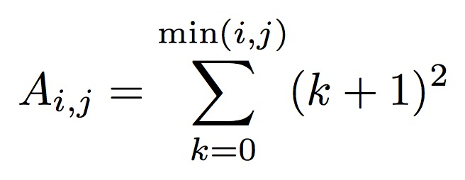

Implement a program called lu (lu.c), that implements the
Gaussian elimination (without pivoting) algorithm. You may have covered this algorithm in a course,
and it is of course well-document in various texts. Regardless, a sequential implementation,
sequential_lu.c, is provided. So you can use it as a starting point
in a "let's parallelize an existing sequential implementation" scenario.
To make it easy to test your implementation, we compute the LU factorization of a particular matrix defined as follows:

(note that the indices start at 0).
The matrix, once the Gaussian Elimination is complete, will have all 1’s in its lower triangular portion,
and i2 values on its diagonal and in its upper triangular portion.
Run lu_sequential.c with a small value of N to see this structure. Your code should check
that these are the values computed by your implementation (each process can do its own check).
You can use any XML platform file and accompanying hostfile to run your MPI program, since this module is solely about correctness and not performance. For instance, you can use cluster_crossbar_64.xml as a platform file and hostfile_64.txt as a hostfile.
For debugging purposes, remember that it's a good idea to insert calls to MPI_Barrier
so that debugging output from the program can be structured step-by-step.